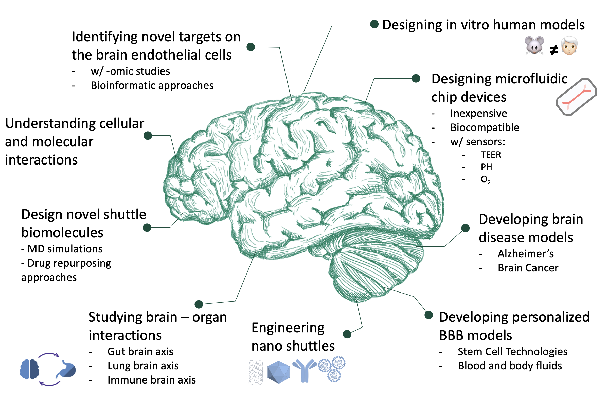

An in vitro 3D microfluidic human NeuroVascular Unit model for identifying the cell-type-specific responses to diverse inflammatory stimuli in the brain capillaries
Neurological disorders affect many people's life, contributing to significant mortality and morbidity in the modern world, with 16.5% of global deaths and are the leading cause of disability, affecting 276 million people's daily lives. Many of these diseases, including Alzheimer’s and Multiple Sclerosis, are related with the impaired blood-brain barrier (BBB) function. Unfortunately, neither animal models of the neurovascular unit (NVU) nor in vitro cultures of primary or immortalized human brain microvascular endothelial cells (BMVECs) alone effectively mimic the barrier, and transporter functions of the BBB observed in humans. Thus, there is a great need for human NVU models to recapitulate in vivo human physiology in health and disease conditions and understand the cellular mechanisms and changes in disease conditions. This project aims to develop a 3D NVU model to identify the cell-type-specific responses to diverse inflammatory stimuli in the NVU.
The NVU-Chip project will the first model providing such a complex cellular environment in a unique microfluidic device to fully recapitulating human NVU in vitro utilizing relevant mechanobiological forces. Additionally, The NVU-Chip will improve the state-of-the-art by incorporating cyclic mechanical strain in a BBB model for the first time. This project will combine and amend the state-of-the-art stem cell technologies to differentiate all brain cells, and advanced microfabrication approaches to design and fabricate the microfluidic chips using the most appropriate materials ECM coatings for co-culturing all cell types in the same device. The human-based NVU-Chip model will also give a new approach for studying cellular responses to diverse inflammatory stimuli, identifying key inflammatory factors of CNS related diseases.
Outcomes of the NVU-Chip project will enhance the existing knowledge and technologies, yielding high-impact journal publications, as well as potential commercial product in the long term.
Click here for more information
Developing an in vitro human epilepsy-on-a-chip model equipped with an intact blood-brain barrier for screening anti-epileptic drugs
Current epilepsy models are based on animal studies; however, it is proven that animal data does not correlate with the human data and that increases the failure rates of the therapeutics in clinical trials. Even though epilepsy is a widely seen chronic neurological disease, our knowledge on its genesis and progress on humans is limited, and we are failing to cure many refractory epileptic cases with current available drugs. In this project, we combine microfluidic devices with advanced stem cell technologies to develop a human epilepsy-on-a-chip model. This model will be the first in vitro human epilepsy model which includes a blood-brain barrier (BBB) component, enabling investigation of cellular interactions, as well as screening of antiepileptics that can cross the BBB.
The technology and knowledge developed during this project for designing, fabrication of the chips, and for differentiation of the stem cells will open new doors for further research. Furthermore, epilepsy-on-a-chip model will be the state-of-the-art in vitro human model to be used in drug development studies; also, it will be the best tool for studying cellular and mechanistic interactions during epileptogenesis. Therefore, the results of this project will potentially contribute to the development of new therapeutics which will ease many people’s lives who are suffering from epileptic seizures.
Finding innovative and alternative approaches to control the disease is of great importance to both Turkish and Iranian nations. This collaboration is thus of high importance as the Iranian team specializes in microfabrication and medical nanotechnology and the Turkish team are experts in stem cell biology and epilepsy. The combination of each team’s strengths will allow us to achieve a successful in vitro human epilepsy model that can be used to develop anti-epileptic drugs for patients.
Click here for more information
Designing nano-shuttles for crossing the blood-brain barrier
This project aims to develop a novel glioblastoma model integrated into the blood-brain barrier in microfluidic devices and demonstrate how these systems can be used to evaluate BBB-penetrating nano-shuttles to deliver drugs to the brain to treat brain tumors. To achieve this goal, we will use cutting-edge stem cell technologies to develop a human cell-based, physiologically relevant glioblastoma BBB chip model that recapitulates tissue function and microenvironment as in vivo, eliminating many of the consequences observed in animal models and allowing us to achieve better translational outcomes for the clinic. We will search for peptides that target highly expressed proteins on brain endothelia and exhibit transcytosis activity. Designing new nano-shuttle systems coated with peptides that penetrate the BBB, we will deliver drugs to the brain at effective therapeutic concentrations while avoiding unwanted side effects.
Click here for more information
Funding Agencies